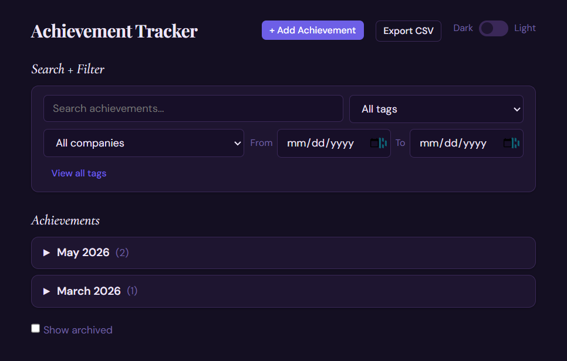

Achievement Tracker
A self-hosted tool for capturing wins in STAR format, with AI writing assistance for resume and promo prep.
Stack: Python · FastAPI · SQLite · Vanilla JS · OpenAI API (optional) · Notion API (optional)

Why I Built This
Every performance review, I'd scramble to reconstruct what I'd actually done over the past year. Notes app entries, Slack threads, vague memories. The details that make an achievement worth citing were gone by the time I needed them.
I wanted a tool that made capturing wins frictionless on the day they happen, in the STAR format that matters when it's time to update a resume or make the case for a promotion. Building it also gave me a real-world context to dog-food AI writing assistance in a workflow I use every day.
The Problem
Performance reviews kept catching me off guard. I'd complete something notable or significant, and think "oh, I'll remember this later" or documenting it would be deprioritized after moving on to the next critical task ... and then the next one ... and then would be forgotten. When it came time to consolidate and communicate these wins, I'd scramble: reviewing notes, Slack messages, emails, anything I could find. I'd just hope for the best.
What I Did
- Designed and built a self-hosted web app with a Python/FastAPI backend and SQLite for local-first, private storage
- Implemented full STAR entry capture (Situation, Task, Action, Result) with a clean, fast interface requiring no build step
- Integrated OpenAI API for AI writing assistance: suggest tags and titles, or rewrite any field to clean up rough or voice-dictated text
- Built a related achievements feature that surfaces entries sharing tags, ranked by overlap, with paginated navigation
- Added search and filter by keyword, tag, date range, and company; monthly grouping with collapsible rows
- Implemented optional Notion integration to promote achievements as full STAR stories to a Notion database, with two-way sync after edits
- Shipped CSV export, archive, light/dark mode, and voice input compatibility (works with WhisprFlow and similar dictation tools)
- Packaged with a one-command launcher and published as an open-source project
The Result
- Daily-use personal tool that replaced scattered notes for tracking professional wins
- Voice-to-STAR workflow: dictate a rough note, AI rewrites it into a clean STAR entry in seconds
- Notion integration creates a shareable record for manager conversations and external portfolios
- Fully local by default, with no database server or cloud dependency required